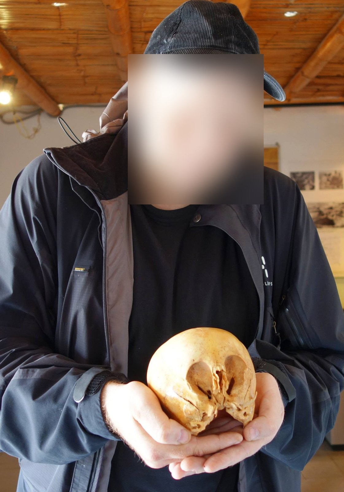

Travel South: foton och berättelser
Travel South är Jani Korpis resor med kamera. År 2011 fotograferade han Peru och Bolivia i resans ordning, från Nazcakusten till saltet i Uyuni: öken, vassöar, murarna i Sacsayhuamán ovanför Cusco och stenarna i Tiwanaku och Puma Punku.
År 2014 fotograferade han i Peru skallar och filmade i ett museum den 1 november 2014. Ett fotografi från det besöket visar honom med skallen som samlingen kallar Starchild 2. Namnet är lånat från en annan skalle i Mexiko, känd genom Lloyd Pye; galleriet håller de två isär. I undersökt Paracas-material tolkas ett långt huvud som en formning i barndomen, inte som ett resultat av DNA.
Den 15 februari 2024 fotograferade han stenhuvuden på Egyptiska museet i Kairo. Deras profil kan påminna om Perus långskallar, men likheten är bara visuell: Kairohuvudena är skulpturer, de peruanska skallarna är ben.

”Jag har rest runt hela jordklotet, och här håller jag Starchild 2-skallen i mina händer.”
Bildberättelser
 Vad berättar skallarna?Ett foto från Peru 2014 visar skallen som kallas Starchild 2 — namnet är lånat från en annan skalle i Mexiko. Sidan tar också upp Paracas-skallar, utställningstexter och publicerad forskning.
Vad berättar skallarna?Ett foto från Peru 2014 visar skallen som kallas Starchild 2 — namnet är lånat från en annan skalle i Mexiko. Sidan tar också upp Paracas-skallar, utställningstexter och publicerad forskning. Vem lärde vem?En bildberättelse i tio kapitel, från Puma Punku till Cusco. Krönikorna är oense om vem som lärde av vem, och kol-14 daterar byggandet av Puma Punku till cirka 580–710 e.Kr.
Vem lärde vem?En bildberättelse i tio kapitel, från Puma Punku till Cusco. Krönikorna är oense om vem som lärde av vem, och kol-14 daterar byggandet av Puma Punku till cirka 580–710 e.Kr. SacsayhuamánTre sicksackmurar klättrar uppför sluttningen ovanför Cusco, stenarna fogade utan murbruk. Foton från resan 2011.
SacsayhuamánTre sicksackmurar klättrar uppför sluttningen ovanför Cusco, stenarna fogade utan murbruk. Foton från resan 2011. Tiwanaku och Puma PunkuVilken del av detta hörn är ett verktygsmärke, och vilken är tolkning? Hur byggdes Puma Punku, och hur gammal är den?
Tiwanaku och Puma PunkuVilken del av detta hörn är ett verktygsmärke, och vilken är tolkning? Hur byggdes Puma Punku, och hur gammal är den? Cusco: Hatun RumiyocDen tolvkantiga stenen på gatan Hatun Rumiyoc ingick i muren till Inca Rocas palats.
Cusco: Hatun RumiyocDen tolvkantiga stenen på gatan Hatun Rumiyoc ingick i muren till Inca Rocas palats. Stenstadens ansiktenAI-illustration · fiktion. 13 bildpar: Janis fotografi och en AI-illustration. Stenstaden och dess invånare är påhittade.
Stenstadens ansiktenAI-illustration · fiktion. 13 bildpar: Janis fotografi och en AI-illustration. Stenstaden och dess invånare är påhittade.
 Bläddra bland 15 platserI resans ordning, från Nazca till Uyuni, med foton, en kort berättelse och videor.
Bläddra bland 15 platserI resans ordning, från Nazca till Uyuni, med foton, en kort berättelse och videor.
Galleriet på alla språk
Öppna hela galleriet, med 15 platser, på ditt språk.